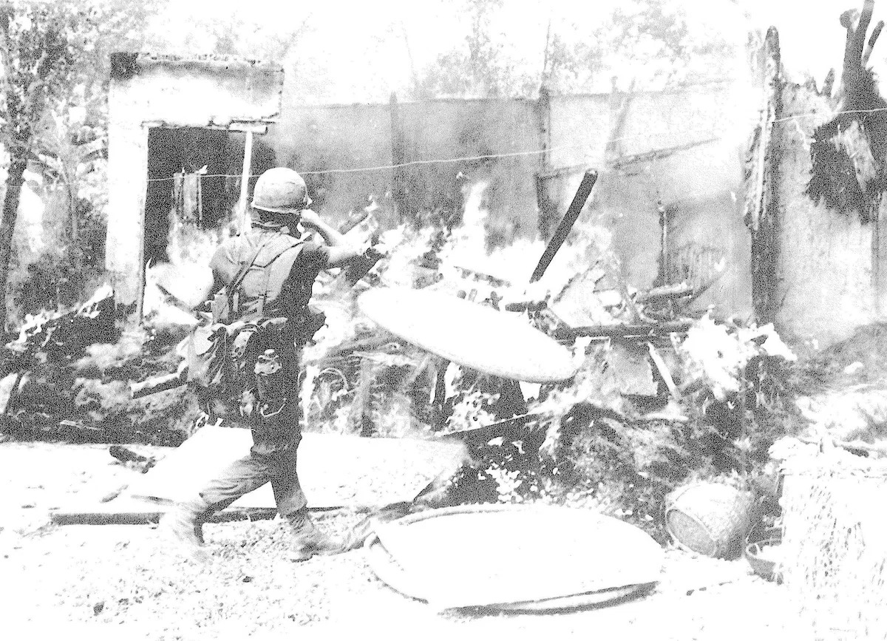

Skip to main content
S
SOURCES Investigation
11th Grade U.S. History
Home
01 / 16
SOURCES Framework Lesson Module
Vietnam War
American Experiences & Responses
Start Module
Next: Content Summary

Image based on the source provided from
History Today
, “The My Lai Massacre and the War at Home.”